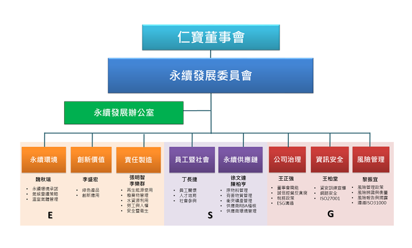
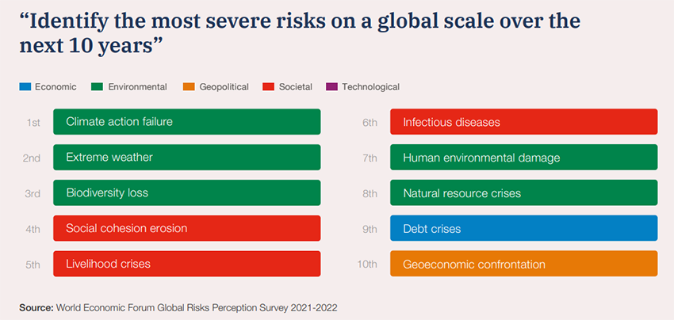
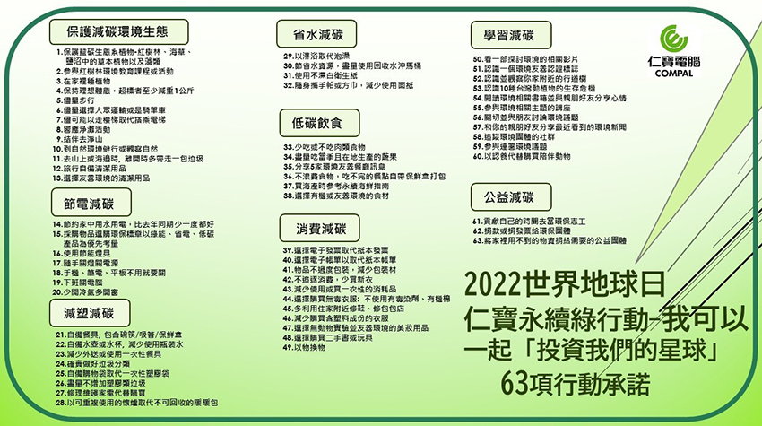

| 你認為CSR企業社會責任是公司的事，和你没關係嗎？ |
| 你認為要推動CSR是企業社會責任辦公室的事，和你的工作没關係嗎？ |
| 大錯特錯喲！ |
地球只有一個，而生為地球公民的我們，在滿足自身需求外，也要重視其它生物永續未來的生存需求。隨著全球暖化及氣候變遷持續加劇，人類及其它物種的生存危機、風險度也逐年提高！聯合國推出永續發展17項目標(SDGs17)希望全球各國一起推動，也希望各個企業在重視獲利和營運風險之餘，也應重視商業行為、生產過程中對環境和社會的影響，加強社會參與正能量，一同來推動永續發展，用ESG檢視企業實行永續發展在「非財務層面」的績效表現。
SDG Progress Report 2022、Do you know all 17 SDGs?
仁寶每年訂定各項永續目標，號召同仁們一同實踐，為公司營運治理、關懷社會、保護地球資源做我們能做的事，想做的事和應該做的事。
仁寶電腦自2010年出版第一本企業社會責任報告書(註1 )以來，企業社會責任辦公室每一年將各個部門同仁們一年努力的工作成果，集結在報告書中。包含公司經營團隊的ESG目標導向、傳遞願景、重視人權和風險管控能力，業務同仁拿到獲利訂單的全年營收，研發、設計、安規部門研發永續產品、取得各項專利和認證，採購部門篩選符合RBA(Responsible Business Alliance負責任商業聯盟)、使用非衝突礦產的優質廠商原物料，品管、製造部門協助生產低污染、低碳排產品，法務、客服、資安部門協助服務利害關係人的權益，綠色推動小組推動公司各項永續環境政策，行管、環安部門致力提供安全的工作環境，重視性別平等、員工關懷照護、健康促進、招募及訓練培育人才；財會部門在永續金融、推動綠色投資策略、為公司與投資人建立良好的誠信溝通管道；以及仁寶電腦每年在社會公益和鼓勵仁寶同仁們自主投入社會關懷和永續環境各項活動的付出和努力。
簡單來說，環境Environment代表公司在研發、製造、生產及行銷產品流程中，對所使用的自然資源和能源，生產過程中排放物及消費後商品的回收和處置的行為和態度；社會Social代表公司和內部員工的勞資關係、與採購供應廠商間的互動關係，甚至是公司與外部社區或社會間互動交流影響的關係。公司治理Governance表示公司在誠信經營下，高層管理人員的組成、公司決策的過程、與股東或投資人的互動關係，和與外部法遵相關的事宜。(註2)
仁寶每一位同仁的存在與當責精神，就是展現公司投資價值的重要永續力！
台灣金管會2020年提出《公司治理3.0-永續發展藍圖》，要求實收資本額20億元以上之上市櫃公司，必須於2023年完成編製並申報2022年之「永續報告書」。在相關部門同仁們共同合作下，仁寶將於今年發布導入TCFD(Task Force on Climate-related Financial Disclosures，氣候相關財務揭露)及SASB(Sustainability Accounting Standards，永續會計準則委員會)之2021年永續報告書。
2021年12月金管會把「企業社會責任實務守則」改成「永續發展實務守則」，仁寶電腦2022年3月經董事會通過永續發展實務守則，並將「企業社會責任委員會」提升為董事會下的功能委員會「永續發展委員會」，由獨立董事擔任負責委員並負責監督；同時翁總經理也成立八大ESG執行小組推動永續發展(ESG組織圖如下)。
|  |
依世界經濟論壇(World Economic Forum, WEF)發布「2022 全球風險報告」(註3)顯示，在 2017 年後，環境風險造成的影響漸形嚴重，全球重大風險不再以經濟面向之風險為大宗，極端氣候、自然災害、氣候行動失敗、生物多樣性流失等環境因素所致風險，近年皆出現於全球前十大風險。2022年「氣候行動失敗」躍升第一名，低碳時代，環境碳排有價化已是國際趨勢。
|  |
臺灣規劃在2050年達到淨零排放目標，推動永續發展及淨零碳排及提早因應相關可能風險，是我們實踐ESG，一起迫切面臨的挑戰！ 2022年仁寶鼓勵同仁承諾實踐63項個人綠行動，只要你願意落實生活中每一個善意行動，就是為永續地球生命盡心力。身為仁寶寶貴人才的同仁們，請一起為仁寶願景，透過永續環境、社會關懷與公司治理ESG三大面向實踐社會責任，為推動全球永續發展目標前進。
|  |
| < 低碳生活：個人可實踐 63項綠行動> |
-----------------------------------------------------------------------------------------------------------------------------------------
【參考資料】
註1:仁寶永續報告書
註2:McKinsey Quarterly explores Five ways that ESG creates value on 2019/11/14
註3: World Economic Forum官網Global Risks Report 2022”